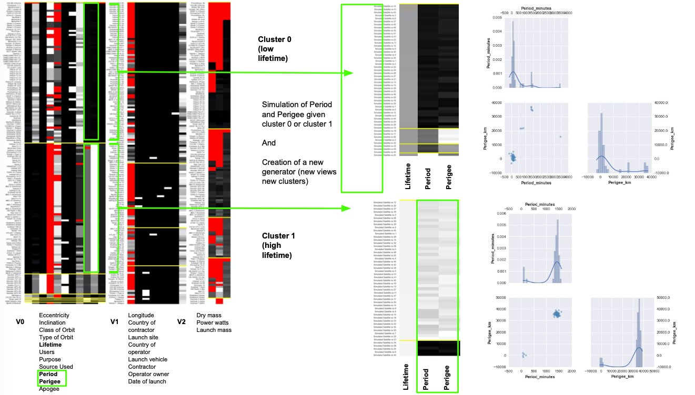

Belhal Karimi
ML ResearchBaidu Research, Cognitive Computing Lab
Seattle, WA, USA
Email: belhal.karimi-at-gmail.com
[Curriculum Vitae] [Google Scholar] [Research Statement]
Previous: INRIA; Ecole Polytechnique; Samsung Research; MIT
Writing on pharmacokinetics related subjects: [blog]
About
|
I am currently an ML Researcher in the Cognitive Computing Lab at Baidu Research working with Dr. Ping Li.
I obtained my Ph.D. in Machine Learning at Ecole Polytechnique (CMAP) and INRIA, under the supervision of Marc Lavielle and Eric Moulines. From October 2016 to October 2019, I was a member of the XPOP team, a joint team between INRIA and CMAP focussing on statistical modelling for life sciences. I had the opportunity to intern in the Samsung AI - HSE Lab (Moscow, RU, 2019), where I was working with Dr. Dmitry Vetrov on optimization methods for Bayesian Neural Networks and at MIT (Boston, USA, 2016), under the supervision of Dr. Vikash Mansinghka, where I've spent most of my time at the Probabilistic Computing Project working on MCMC methods. Dev at [Saemix, R bookdown and twitter]. Inclusivity at [CAiAI]. Sc. Advisor at [Monk AI] and [Grokvideo/Brainattic]. |
News
- [2023, May] Our work 'Layer-wise and Dimension-wise Locally Adaptive Federated Learning' has been accepted in The Conference on Uncertainty in Artificial Intelligence (UAI 2023). [pdf] -- New
- [2023, Feb.] Brainattic has been acquired by Master The Monster, an all-in-one platform dedicated to video creation.
- [2022, Sept.] Our work 'On the Convergence of Decentralized Adaptive Gradient Methods' has been accepted in Asian Conference on Machine Learning (ACML 2022). [pdf] -- New
- [2022, May] Our work 'Variational Flow Graphical Model' has been accepted in The International Conference on Knowledge Discovery and Data Mining (SIGKDD 2022), article available soon.
- [2022, Mar.] Our work 'Dual Energy-Flow Enhanced Graph Neural Network for Visual Question Answering' has been accepted in The IEEE International Conference on Multimedia and Expo (ICME 2022), article available soon.
- [2022, Feb.] Monk AI has been acquired by ACV Auctions, widening the company’s already impressive database of vehicle intelligence and ultimately providing a seamless end-to-end customer experience for dealers, with potential to build a direct-to-consumer offering [press].
- [2022, Jan.] Our work 'On Distributed Adaptive Optimization with Gradient Compression' has been accepted in The International Conference on Learning Representations (ICLR 2022). [pdf], slides and presentation available soon -- New
Papers
|
Layer-wise and Dimension-wise Locally Adaptive Federated Learning
Belhal Karimi, Xiaoyun Li and Ping Li. The Conference on Uncertainty in Artificial Intelligence (UAI), 2023 [abs] [pdf] [code] |
|
|
FeatureBox: Feature Engineering on GPUs for Massive-Scale Ads Systems
Weijie Zhao, Xuewu Jiao, Xinsheng Luo, Jingxue Li, Belhal Karimi and Ping Li. IEEE International Conference on Big Data (IEEE BigData), 2022 [abs] [pdf] [code] |
|
|
On the Convergence of Decentralized Adaptive Gradient Methods
Xiangyi Chen, Belhal Karimi, Weijie Zhao and Ping Li. Asian Conference on Machine Learning (ACML), 2022. [abs] [pdf] |
|
|
Variational Flow Graphical Model
Shaogang Ren, Belhal Karimi, Dingcheng Li and Ping Li. International Conference on Knowledge Discovery and Data Mining (SIGKDD), 2022. [abs] [pdf] |
|
|
Dual Energy-Flow Enhanced Graph Neural Network
for Visual Question Answering
Hao Li, Xu Li, Belhal Karimi, Jie Chen and Mingming Sun. International Conference on Multimedia and Expo (ICME), 2022. [abs] [pdf] |
|
|
On Distributed Adaptive Optimization with Gradient Compression
Xiaoyun Li, Belhal Karimi and Ping Li. The International Conference on Learning Representations (ICLR), 2022. [abs] [pdf] |
|
|
Minimization by Incremental Stochastic Surrogate for large-scale nonconvex Optimization
Belhal Karimi, Hoi-To Wai, Eric Moulines and Ping Li. Algorithmic Learning Theory (ALT), 2022. [abs] [pdf] [poster] [slides] |
|
|
An Optimistic Acceleration of AMSGrad for Nonconvex Optimization
Jun-Kun Wang, Xiaoyun Li, Belhal Karimi and Ping Li. Asian Conference on Machine Learning (ACML), 2021. [abs] [pdf] [code] |
|
|
Two-Timescale Stochastic EM Algorithms
Belhal Karimi and Ping Li. IEEE International Symposium on Information Theory (ISIT), 2021. [abs] [pdf] [code] |
|
|
HWA: Hyperparameters Weight Averaging in Bayesian Neural Networks
Belhal Karimi and Ping Li. Advances in Approximate Bayesian Inference (AABI), 2021. [abs] [pdf] [video] |
|
|
Towards Better Generalization of Adaptive Gradient Methods
Yingxue Zhou, Belhal Karimi, Jinxing Yu, Zhiqiang Xu and Ping Li. Advances in Neural Information Processing Systems (NeurIPS), 2020. [abs] [pdf] [poster] |
|
|
FedSKETCH: Communication-Efficient Federated Learning via Sketching
Farzin Haddadpour, Belhal Karimi, Ping Li and Xiaoyun Li. arXiv preprint arXiv:2008.04975, 2020. [abs] [pdf] [code] |
|
|
f-SAEM: A fast Stochastic Approximation of the EM algorithm
Belhal Karimi, Marc Lavielle and Eric Moulines. Computational Statistics and Data Analysis (CSDA), vol. 141, p. 123-138, 2020. [abs] [pdf] [code] [poster] |
|
|
On the Global Convergence of (Fast) Incremental Expectation Maximization Methods
Belhal Karimi, Hoi-To Wai, Eric Moulines and Marc Lavielle. Advances in Neural Information Processing Systems (NeurIPS), 2019. [abs] [pdf] [code] [slides] [poster] |
|
|
Non-asymptotic Analysis of Biased Stochastic Approximation Scheme
Belhal Karimi, Blazej Miasojedow, Eric Moulines and Hoi-To Wai. Proceedings of the 32nd Conference On Learning Theory (COLT), 2019. [abs] [pdf] [code] [slides] [poster] |
|
|
Nonconvex Optimization for Latent Data Models: Algorithms, Analysis and Applications
Belhal Karimi. Ph.D. thesis, Xpop at INRIA and Ecole Polytechnique, 2019. [abs] [pdf] [slides] |
|
|
Scaling Saemix, a dedicated R package for nonlinear mixed effects modeling
Belhal Karimi and Emmanuelle Comets. Chan Zuckerberg Intitiative Proposal (CZI), 2019. [abs] [pdf] [code] |
|
|
MISSO: Minimization by Incremental Stochastic Surrogate for large-scale nonconvex Optimization
Belhal Karimi and Eric Moulines. 1st Symposium on Advances in Approximate Bayesian Inference (AABI), 2018. [abs] [pdf] [code] [slides] [poster] |
|
|
Efficient Metropolis-Hastings sampling for nonlinear mixed effects models
Belhal Karimi and Marc Lavielle. Proceedings of Bayesian Statistics and New Generations (BAYSM), 2018. [abs] [pdf] [code] [slides] [poster] |
|
|
On the Convergence Properties of the Mini-Batch EM and MCEM Algorithms
Belhal Karimi, Marc Lavielle and Eric Moulines. Accepted for a poster presentation at the Data Science Summer School (DS3), 2017. [abs] [pdf] [code] [slides] [poster] |
|
|
Non linear Mixed Effects Models: Bridging the gap between Independent Metropolis Hastings and Variational Inference
Belhal Karimi, Marc Lavielle and Eric Moulines. Accepted at the Implicit Models workshop (ICML), 2017. [abs] [pdf] [code] [slides] [poster] |
|
|  |
Probabilistic and Inferential Programming
Belhal Karimi. MS thesis, ProbComp Project at MIT, 2016. [abs] [pdf] [code] [slides] [poster] |
Talks
|
ISIT 2021 Two-Timescale Stochastic EM Algorithms
Virtual Conference, Jul. 2021. [slides] [video] |
|
AABI 2020 HWA: Hyperparameters Weight Averaging in Bayesian Neural Networks
Virtual Conference, Jan. 2021. [slides] [video] |
|
NeurIPS 2020 Towards Better Generalization of Adaptive Gradient Methods
Virtual Conference, Dec. 2020. [poster] |
|
NeurIPS 2019 On the Global Convergence of (Fast) Incremental EM Methods
Vancouver, Canada, Dec. 2019. [poster] |
|
Ph.D. Defense Nonconvex Optimization for Latent Data Models: Algorithms, Analysis and Applications
Palaiseau, France, Sept. 2019. [slides] |
|
Samsung AI - HSE Lab An Incremental and An Online Point of View of Nonconvex Optimization
Moscow, Russia, Aug. 2019. [slides] |
|
Baidu Research Nonconvex Optimization for Latent Data Models: Algorithms, Analysis and Applications
Beijing, China, Aug. 2019. [slides] |
|
COLT 2019 Non-asymptotic Analysis of Biased Stochastic Approximation Scheme
Phoenix, USA, Jun. 2019. [poster] |
|
PGMODays 2018 MISSO Scheme
Palaiseau, France, May. 2018. [slides] |
|
Compstat 2018 Acceleration of MLE algorithms
Iasi, Romania, Aug. 2018. [slides] |
|
Facebook HQ Mixed effects models: Maximum Likelihood and Inference
Paris, France, Feb. 2017. [slides] |
|
McGovern Institute Analysis of birth cohort studies in BayesDB
Boston, USA, May. 2016. [poster] |
|
ML Tea at CSAIL Probabilisitc Computing Project
Boston, USA, May. 2016. [slides] |
Software
|
Saemix
Marc Lavielle, Emmanuelle Comets, Audrey Lavenu and Belhal Karimi. [git] [web] [R bookdown] |
Industry
|
Brainattic/Grokvideo
Research in Information retrieval in video streams. Video search engine and automatic trailer generation using Deep Learning. (Acquired by Master The Monster) PR: Axe IA accueille 5 nouvelles entreprises... |
|
Monk AI
Scientific advisor to Monk AI, a French startup providing automated & objective condition reports, Paris, France. Damages detection using Mask R-CNN. (Acquired by ACV Auctions) PR: Monk AI lève 2.1 millions d’euros pour identifier les dommages automobiles... |
|
Samsung AI
Research intern at Samsung AI - HSE Lab, leading Russian lab in Bayesian Deep Learning, Moscow, Russia. Project: Optimization for Bayesian Neural Networks with Dr. Dmitry Vetrov. PR: Our colleagues Alexander Shekhovtsov and Belhal Karimi gave talks on actual problems of machine learning... |
|
OuiCar
One-year freelance at OuiCar, French peer-to-peer car sharing platform, Paris, France. Project: damages detection using Deep Learning (Mask R-CNN). |
|
Popsy
Freelance at Popsy, leading South American Classifieds App, NYC, USA. Project: predict the Category and Price of any given listing based on their pictures. |
|
AMIES
Industry workshops at AMIES, Mathematics and Enterprises, Montreal, Canada. Project: Inspection Route Optimization. [slides] [pdf] |
|
Agora
Start-up project Agora, an innovative Scratches Detection computer vision engine, Paris, France. See [pitch], [www] and [UI]. |
Awards
|
Visiting Student Researcher Grant
Obtained from the Jacques Hadamard Foundation [Junior Scientific Visibility] to pursue a research project on Bayesian Deep Learning at the HSE-Samsung AI Lab in Moscow with Dr. Dmitry Vetrov. ANR-11-LABX-0056-LMH. |
|
Student Travel Award
Conference on Learning Theory (June 2019 Phoenix, USA). |
|
Young Researcher Travel Award
International Conference on Bayesian Statistics in Action (July 2018 Warwick, UK). |
|
Startup Pitch Award
Ranked 4th/130 at JSC 2017. Awarded to pitch at Axel Springer Plug and Play accelerator in Berlin, Aug 2017. |
Reviewing Activities
|
• Conferences NeurIPS 2021 ICLR 2020 AAAI 2020 NeurIPS ICBINB Workshop 2020 AISTATS 2019 AABI 2019 ICML 2019 • Journals Australian & New Zealand Journal of Statistics Statistics and Computing - Springer Neural Networks - Elsevier |
Teaching Activities
|
• Executive Education Program at Ecole Polytechnique: Machine Learning (Orange, SFR,...) • MAP534 Machine Learning: Msc Ecole Polytechnique-HEC • MAP535 Regression: Msc Ecole Polytechnique-HEC • Bayesian Statistics: Msc Data Science Ecole Polytechnique • Innovation & Technology: 3rd-year students at Ecole Polytechnique |
Education
|
Ecole Polytechnique
Oct. 2016 -- Sep. 2019 Ph.D. candidate in Machine Learning Advisors: Prof. Marc Lavielle, Prof. Eric Moulines |
|
Paris Sciences et Lettres, PSL ITI
Sep. 2015 -- Jun. 2016 Masters in Computer Science Advisor: Dr. Vikash Mansinghka while visiting MIT (Jan. -- Jun. 2016). Professors: Prof. Gabriel Peyre (Computer Vision and Graphics). |
|
CentraleSupelec
Sep. 2011 -- Jun. 2015 Bachelors and Masters in Computer Science and Engineering Professors: Prof. Olivier Pietquin, Prof. Matthieu Geist (Signals & Systems). |
Contact
|
Belhal Karimi
belhal.karimi@gmail.com Baidu Research, CCL 10900 NE 8th St #750, Bellevue, WA 98004 |